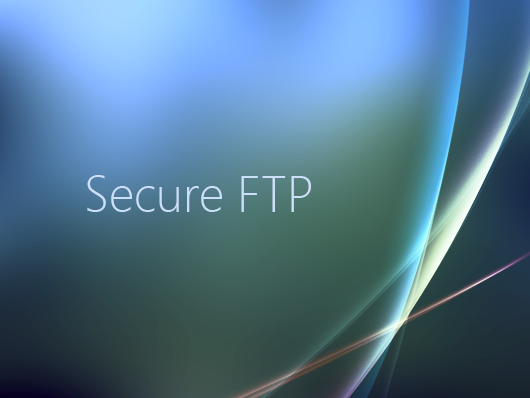

Universidad Tecnologica Nacional
Facultad Regional Cordoba
Catedra de Tecnologia Software de Base
Trabajo Practico Final
Secure FTP

Autor del Trabajo: Damian Federico Bruera.
Legajo: 52814.
Profesores: Ing. Valerio Frittelli - Ing. Felipe Steffolani.